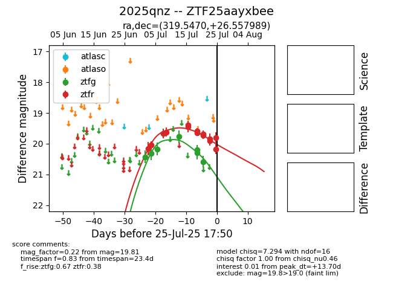

Target 2025qnz at 2025-07-25 17:50, see:
FINK: fink-portal.org/2025qnz
Lasair: lasair-ztf.lsst.ac.uk/objects/2025qnz
ALeRCE: alerce.online/object/2025qnz
TNS: wis-tns.org/object/2025qnz
YSE: ziggy.ucolick.org/yse/transient_detail/2025qnz
alt names
ZTF25aayxbee (ztf,fink)
2025qnz (tns,yse)
coordinates:
equatorial (ra, dec) = (319.5470,+26.55799)
galactic (l, b) = (74.7438,-15.76817)
photometry
last ztfg=20.59, ztfr=19.81
7 ztfg, 14 ztfr detections
